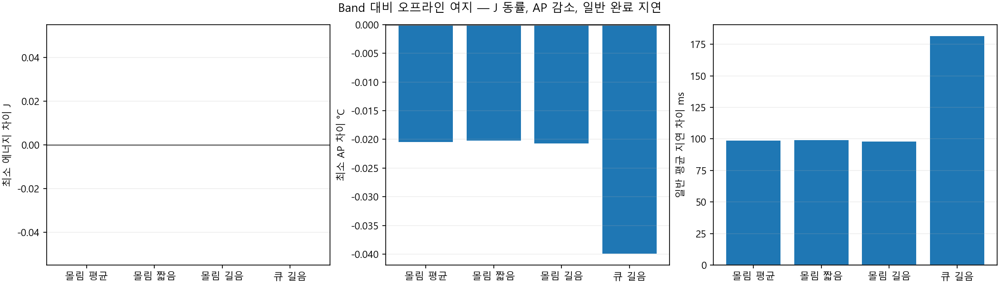
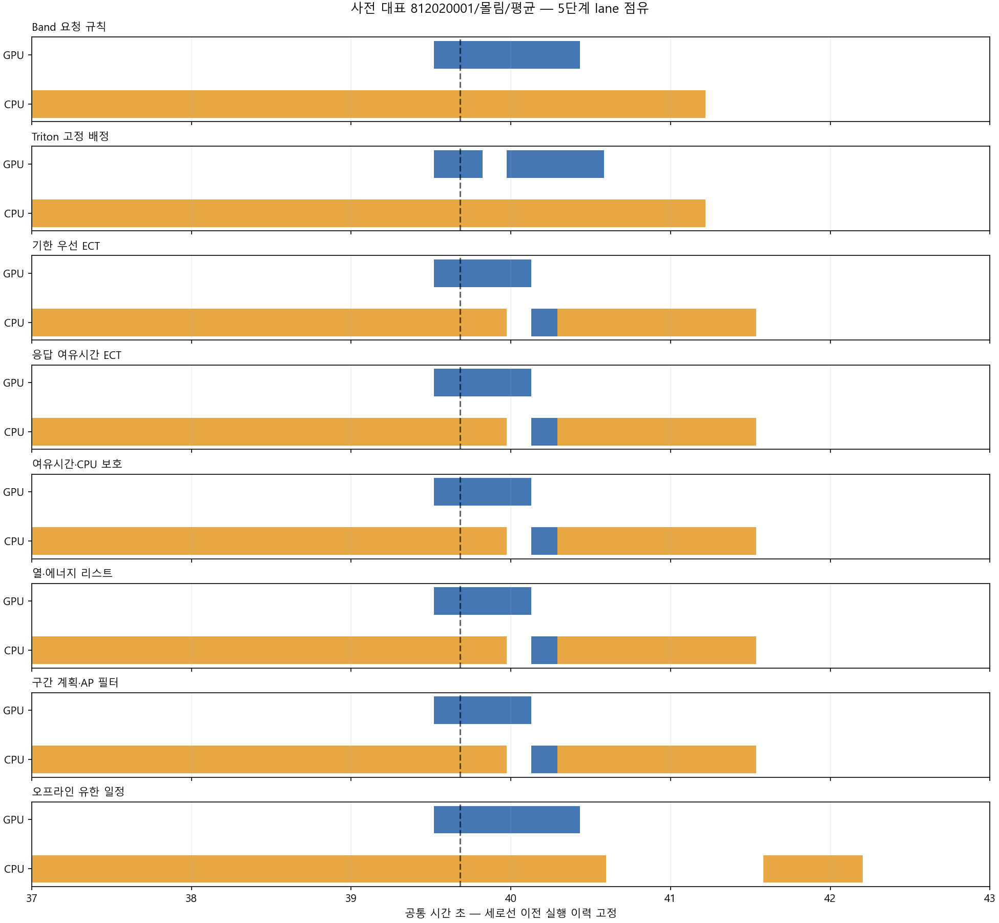
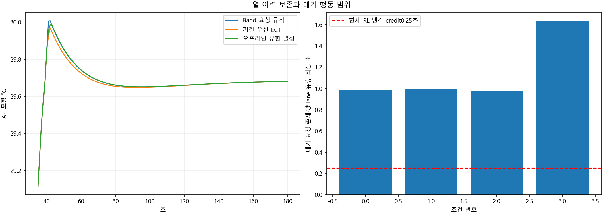
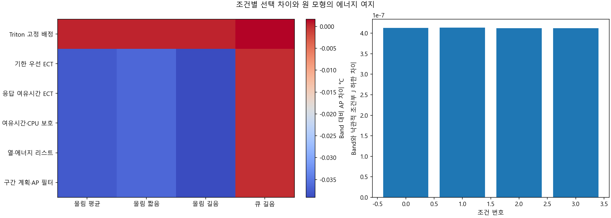
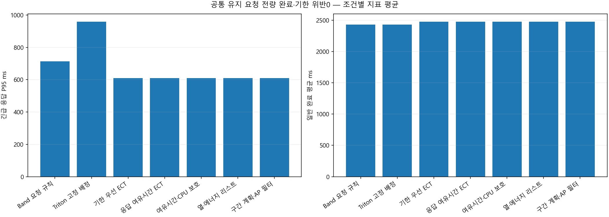

48조건 중 구조 적격4 · 요청15건씩 유지 · 다른9건 제외. 전체 원 trace 우위나 독립 평가가 아닙니다.
전수 공간에서 공동 J/AP 감소0. J 동률로 AP 모형0.020~0.040°C 감소하는 오프라인 일정은4조건, 일반 평균98~181ms 지연. 실제 표면온도나 폰 절감이 아닙니다.
| 규칙 | 판단 차이 |
|---|---|
| Band 요청 규칙 | 원 HEFT whole-request 순위·worker 선택·완료 EMA |
| Triton 고정 배정 | 원 fixed instance·rate off + 외부 prefix 점유 guard |
| 기한 우선 ECT | EDD 우선·5단계 lane ECT |
| 응답 여유시간 ECT | due - 예상 응답·lane ECT |
| 여유시간·CPU 보호 | 여유시간 + 이미 도착한 CPU 전용 요청 보호 |
| 열·에너지 리스트 | 원3문맥 J/AP/서비스 필터·제한 대기 |
| 구간 계획·AP 필터 | 현재4요청 CP-SAT J 계획·첫 행동 AP 필터 |
| 규칙 | 완료/60 | 긴급 실패 | 일반 실패 | 긴급 P95 ms | 일반 평균 ms | J 평균 | AP 평균 |
|---|---|---|---|---|---|---|---|
| Band 요청 규칙 | 60 | 0 | 0 | 712.35584 | 2426.50429 | 138.170524 | 30.0034595 |
| Triton 고정 배정 | 60 | 0 | 0 | 958.185265 | 2426.50429 | 138.170524 | 30.0042054 |
| 기한 우선 ECT | 60 | 0 | 0 | 608.949813 | 2474.33033 | 138.237294 | 29.9751724 |
| 응답 여유시간 ECT | 60 | 0 | 0 | 608.949813 | 2474.33033 | 138.237294 | 29.9751724 |
| 여유시간·CPU 보호 | 60 | 0 | 0 | 608.949813 | 2474.33033 | 138.237294 | 29.9751724 |
| 열·에너지 리스트 | 60 | 0 | 0 | 608.949813 | 2474.33033 | 138.237294 | 29.9751724 |
| 구간 계획·AP 필터 | 60 | 0 | 0 | 608.949813 | 2474.33033 | 138.237294 | 29.9751724 |
| 조건 | 부하 | 문맥 | 선언 공간 | 방문 | 공동감소 | 참고 AP 차이 | 일반 지연 ms |
|---|---|---|---|---|---|---|---|
| 0 | burst | mean | 4460544 | 127764 | 0 | -0.0204501889 | 98.5544584 |
| 1 | burst | short_context | 4460544 | 118638 | 0 | -0.0202208227 | 99.2052757 |
| 2 | burst | long_context | 4460544 | 137592 | 0 | -0.0206767658 | 97.9382762 |
| 3 | queue | long_context | 4460544 | 76384 | 0 | -0.0399154295 | 181.487895 |
| 목적 | 실행 문맥 | 서비스 유지 | J/AP 비악화 | J 차이 | AP 차이 | P95 차이 ms |
|---|---|---|---|---|---|---|
| min_J | short_context | False | False | 0.00021549157 | -0.0202456758 | 15.446742 |
| min_J | long_context | True | True | 0 | -0.0206767658 | 0 |
| min_AP | short_context | False | False | 0.00021549157 | -0.0202456758 | 15.446742 |
| min_AP | long_context | True | True | 0 | -0.0206767658 | 0 |




